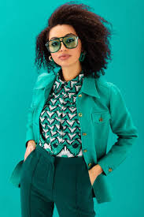
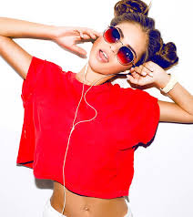

Commes des Garcons' runway shows are often humorous due to their unconventional and exaggerated designs, which challenge traditional beauty standards and push the boundaries of fashion. These avant-garde collections feature oversized shapes, asymmetrical hemlines, and unexpected materials, which can be seen as comical or absurd.

Accordion pants are humorous because they look like a musical instrument with their baggy, pleated design, and loud colors. Their unconventional shape and appearance make them a popular subject of jokes and memes on social media.

Geometric designs used in runway fashion can be so ridiculous that they become humorous. These designs feature exaggerated shapes, patterns, and colors that are impractical for everyday wear. However, they showcase the creativity of the designer, such as the Maison Margiela runway look shown here.

Overmatching clothing in fashion, where every piece of clothing is in the same print or color, can be seen as humorous due to its exaggerated and bold appearance. While it can be seen as ridiculous or even clownish, it is also a form of self-expression and individuality for some. Regardless, the trend remains a notable feature of modern fashion.

The use of models making kissy faces to sell clothing can be seen as humorous due to their exaggerated and often superficial expressions. While this approach remains popular among fashion brands, it can be criticized for objectifying the models and detracting from the clothes being sold.

Music's influence on fashion can be humorous, resulting in unexpected and sometimes bizarre trends like oversized neon jackets and eccentric hairstyles. However, this influence can also celebrate self-expression and breaking free from conventional norms.
Sleeveless suits on runway models are humorous due to their unconventional and sometimes absurd appearance. Despite being seen as impractical, designers continue to showcase them in bold colors and patterns, adding to the trend's humor.

It can be humorous how people often follow the same fashion trends, resulting in a lack of individuality despite fashion being a form of self-expression. This happens due to a variety of factors like popular culture, social media, and peer pressure. Despite this, fashion should still strive for uniqueness and self-expression.

The humor lies in how people who don't prioritize fashion can end up looking great while those who put in more effort can miss the mark. Authentic dressing without the burden of trends can result in an attractive and effortless style. It's ironic how fashion, which is meant to achieve a certain look, can sometimes hinder this effortless style.